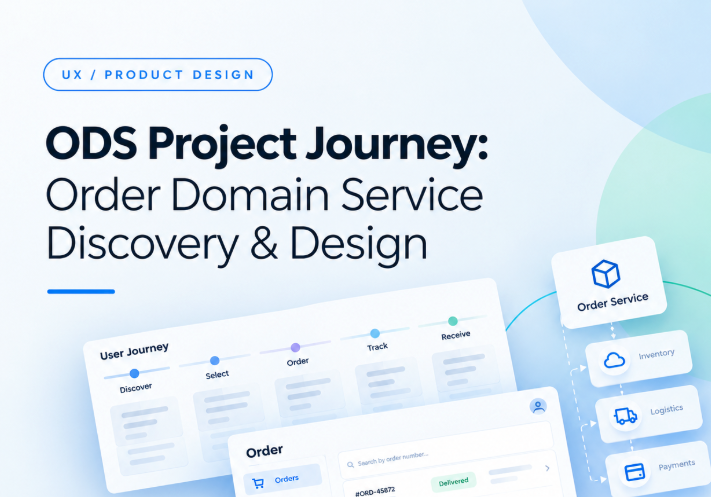
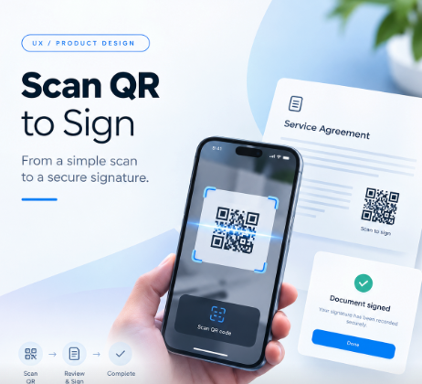
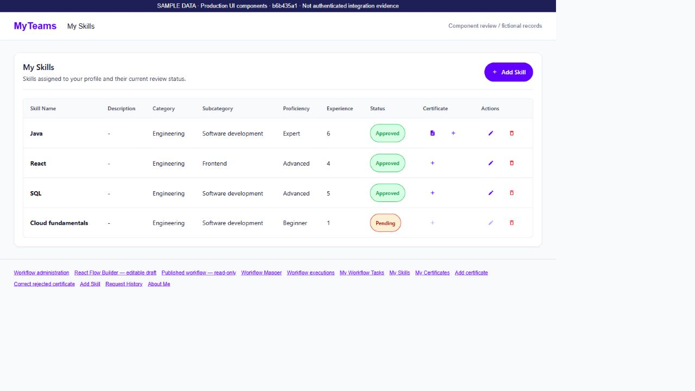
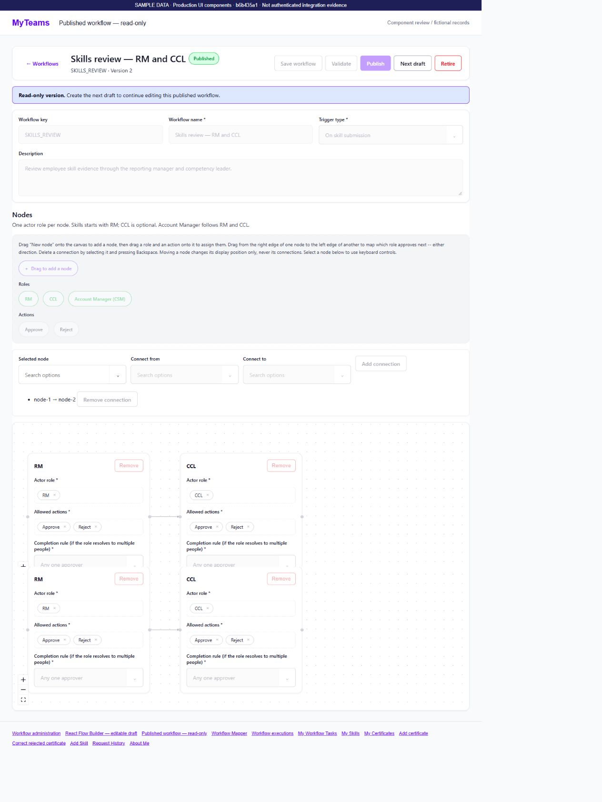

Diseño experiencias que las personas adoptan y que hacen crecer el negocio, aceleradas con IA.
El buen diseño no es ornamental: debe resolver un dolor humano real y mover las métricas de la empresa. Con más de 12 años liderando productos para gigantes de FinTech y Banca (Progressive Leasing EE.UU., Banco Bci, Falabella, Santander), integro Claude y Gemini como aceleradores estratégicos: elimino suposiciones, sintetizo research en minutos y entrego soluciones con impacto directo en conversión, retención y ROI.
La Verdadera Intención: ¿Por qué Unir UX, Negocio e IA?
Diseñar sin entender el negocio es perder el tiempo; diseñar sin empatía es perder usuarios; y diseñar sin IA hoy es trabajar a ciegas y con lentitud. Mi objetivo es equilibrar los tres factores para crear productos viables, rentables y profundamente humanos:
Empatía Humana & UX End-to-End
Entender la frustración del usuario en su punto más crítico. Traduzco procesos burocráticos y densos en experiencias fluidas donde cada acción se siente natural, segura y sin fricción.
- Escucha activa e investigación cualitativa: detectar dónde el usuario duda o se rinde
- Arquitectura de información y orquestadores visuales complejos (React Flow)
- Accesibilidad universal WCAG 2.1 AA para no excluir a ningún segmento
Mentalidad de Negocio & Retorno de Inversión (ROI)
Cuidar los números y la sostenibilidad de la empresa. Cada flujo que diseño responde a un objetivo financiero claro: reducir costos, aumentar ingresos o fidelizar clientes.
- Alineación estratégica con OKRs directivos y metas de rentabilidad trimestrales
- Optimización de embudos de conversión (CRO) y reducción de churn en checkout
- Disminución cuantificable de costos de soporte y fricción operacional interna
Inteligencia Artificial como Multiplicador Estratégico
Dominio avanzado de Claude (Claude Cowork) y Google Gemini (Multimodal Vision). No uso la IA como un atajo superficial, sino para eliminar conjeturas y acelerar certezas.
- Síntesis automatizada de 10+ pruebas de usabilidad en minutos vs. semanas
- Auditoría heurística visual y detección de anomalías de UI con Gemini Vision
- Desarrollo de tooling personalizado para squads (UX Analyzer con Claude SDK)
La IA en la Práctica: De la Hipótesis al Impacto Real
Aquí no hay conceptos abstractos. Explora en vivo cómo aplico prompts estructurados con Claude y Gemini para resolver problemas reales de negocio y acelerar decisiones de diseño:
Framework Real de Síntesis: Progressive Leasing
Matriz de afinidad, tiempo por tarea y cálculo de confianza (A/B Testing Synthesis) documentada en mi metodología.
| Participante | Diseño Evaluado | T1 (Selección) | T2 (Costos) | T3 (Términos) | Confianza (1-5) | Tiempo en Tarea | Resultado Negocio |
|---|---|---|---|---|---|---|---|
| Usuario P1 | Diseño B (Validado) | ✓ Éxito | ✓ Éxito | ✓ Éxito | 4.6 / 5.0 | 210 seg (-34%) | Conversión Confirmada |
| Usuario P2 | Diseño A (Anterior) | ✓ Éxito | ✗ Fricción | ✓ Éxito | 2.8 / 5.0 | 415 seg | Abandono Potencial |
Casos de Estudio: Problemas Reales, Impacto Medible
Historias reales de cómo la investigación centrada en las personas, la visión de negocio y la aceleración con IA resolvieron fricciones críticas en grandes organizaciones:

ODS Project Journey: Discovery Técnico, Arquitectura de Entrega & Prototipado
Transformé documentación técnica abstracta y sin referencias visuales en una arquitectura UX lista para producción: lideré un viaje de 8 fases coordinando ProgCentral, MyStore BFF, EA e Ingeniería, acelerando la síntesis con Claude y validando contratos API con prototipos interactivos del Carrito ODS y especificaciones para Jira MS-3923.

React Flow Builder, Seguridad Okta & Firma QR 'Scan to Sign'
Diseñé el constructor visual de nodos drag-and-drop con validación lógica en tiempo real para ProgCentral y la innovación 'Scan to Sign' (firma de contratos mediante QR en retail). Optimicé flujos de originación RLD y aseguré gobernanza estricta bajo estándares de seguridad Okta, reduciendo un 38% el tiempo de configuración de reglas.

Democratización de Plataforma de Inversiones Digitales
Eliminé el miedo a invertir traduciendo la jerga financiera densa en simuladores interactivos guiados por metas de vida reales, combinando microcopy empático testeado con IA para incrementar en 32% los nuevos inversionistas activos.

Optimización de Funnel de Compra y Escalamiento Regional
Unifiqué la experiencia de checkout y selección de despacho para más de 15 millones de compradores mensuales en 3 países, reduciendo drásticamente la fricción en el carrito y generando un aumento del 1.8% en la tasa de conversión global (CRO).

Ecosistemas Móviles Nativos y Apps de Campo B2B
Diseñé interfaces táctiles resistentes para técnicos de terreno de Telefónica con soporte offline en Ionic 4 y flujos de enrolamiento veloz para la fintech Superdigital de Santander, reduciendo en 50% los tiempos de resolución en campo.
Cursos de Inteligencia Artificial & Negocios
Certificaciones y especializaciones que respaldan mi dominio técnico en modelos generativos y visión estratégica empresarial:
Claude 101 & Advanced Prompting
Especialización en cadenas de pensamiento, estructuración de contexto denso, Claude Cowork en flujos de diseño y desarrollo de agentes para síntesis cualitativa.
Google Gemini & Multimodal UX Analysis
Aplicación de modelos multimodales para análisis visual de heurísticas, extracción de patrones de diseño desde capturas y benchmarking competitivo a alta velocidad.
Cómo Administrar por Objetivos (MBO / OKRs)
Alineación de objetivos de experiencia con metas trimestrales y anuales de la empresa: indicadores cuantitativos, valor entregado y ROI del diseño.
Fundamentos de Gestión de Proyectos: Requisitos
Levantamiento riguroso de requerimientos funcionales y técnicos, prevención de scope creep y articulación entre stakeholders de negocio y equipos de ingeniería.
Liderazgo y Trabajo en Equipo en Entornos Ágiles
Facilitación de workshops de co-creación, design sprints, gestión de consenso con clientes y liderazgo de squads multidisciplinarios en entornos remotos y globales.
Inglés de Negocios: Comunicación y Gestión de Crisis
Comunicación fluida con stakeholders ejecutivos en Estados Unidos (Progressive Leasing / Utah), defensa de decisiones de diseño y resolución de incidencias críticas.
Herramientas que Domino en el Día a Día:
Trayectoria Profesional
Más de una década evolucionando desde la dirección de arte y estrategia de negocio hasta el liderazgo en UX e inteligencia artificial:
Senior UX Designer
Liderazgo de diseño para la plataforma de financiamiento Lease-to-Own. Creación de la arquitectura de 'ProgCentral' y 'React Flow Builder' para gobernanza de aprobaciones. Aplicación de Claude Cowork para sintetizar pruebas de usabilidad y frameworks cuantitativos de evaluación A/B.
UX Designer (Wealth Management & Banca Inversiones)
Colaboración en el desarrollo de productos de inversión y flujos customer-centric. Ejecución de actividades de Research cualitativo, Journey Maps, diagramas de flujo, Wireframing, Prototyping y experiencia End-to-End, logrando un aumento del 32% en nuevos inversionistas digitales.
Analista UX
Optimización de la tasa de conversión en los flujos de checkout, selección de métodos de despacho y escalamiento del Design System transversal para los equipos de Chile, Perú y Colombia.
UX / UI Designer - Solutions Analyst
Diseño de pantallas nativas para la fintech Superdigital de Santander, flujos para comercios en Transbank y maquetación frontend en Ionic 4 para la aplicación móvil de soporte técnico en terreno de Telefónica S.A.
Diseñador Web & UX/UI Designer
Benchmark competitivo, validación de datos, journey mapping, wireframing, pruebas de usabilidad y maquetación frontend en Ionic 4 bajo metodologías ágiles.
Art Director & Strategic Consultant
Desarrollo de planes de negocio, consultoría estratégica para clientes en EE.UU., aumento de tráfico web, desarrollo de estrategias de venta e interfaces para optimización de ingresos publicitarios.
📄 Descargar Currículum Vitae Oficial (PDF)
Accede al historial profesional completo con métricas de impacto en FinTech (Progressive Leasing EE.UU.), Banca (Bci, Santander), CIAM (Falabella) y certificaciones en IA aplicada.
¿Listo para Impulsar tu Próximo Producto con UX e IA?
Hablemos sobre cómo conectar las necesidades de tus usuarios con los objetivos de tu negocio mediante diseño de vanguardia y aceleración con IA.
Canales Directos
Respondo habitualmente en menos de 24 horas. Disponible para roles Senior / Lead UX y consultorías de producto estratégico.
Email Directo
lemare.alejandro@gmail.com
WhatsApp & Teléfono
+56 9 5919 1255
Perfil de LinkedIn
linkedin.com/in/alejandrolemare
Ubicación & Modalidad
Santiago de Chile • Disponible Remoto Global (USA / LatAm)
📄 Descargar Currículum Vitae Oficial (PDF)
Formato descargable optimizado con historial completo y certificaciones:
Envíame un Mensaje
Cuéntame sobre tu empresa, producto o desafío de diseño: